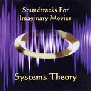

| Artist: | Systems Theory |
| Title: | Soundtracks For Imaginary Movies |
| Label: | Indepent Records IR24612 |
| Length(s): | 74 minutes |
| Year(s) of release: | 2004 |
| Month of review: | [10/2005] |
| 1) | Green Miata Baja Sound | 6.39 |
| 2) | The Cool Vibe Of Asia C | 5.44 |
| 3) | Four Piece Suite | 13.18 |
| 4) | Silent Service | 11.36 |
| 5) | A Lifeboat, Tallulah And Me | 5.00 |
| 6) | Water Through Fingers | 7.21 |
| 7) | Zero Sum Equation | 7.20 |
| 8) | One Step To Freefall | 7.12 |
| 9) | Last Letters From Stalingrad | 9.36 |
The Cool Vibe Of Asia C indeed has some Asian sounds, albeit more middle and north eastern than what one would normally associate with Asian sounds. As Four Piece Suite progresses more dance influences are added in. As did TD later on. Silent Service builds up slowly towards a majestic mellotron climax, winding down into some more experimental sounds. This heavy mellotron sound returns on closer Last Letters From Stalingrad, displaying that ST also uses the older TD vocabulary.
Water Through Fingers features odd sounding huffy synths and some eastern influences, thus steering away from the TD lingo. Once again the build up towards a climax pans out rather well. One Step To Freefall takes the TD vocabulary out for a walk on the wild side, it being rather experimentally odd and less melodic than the other material.